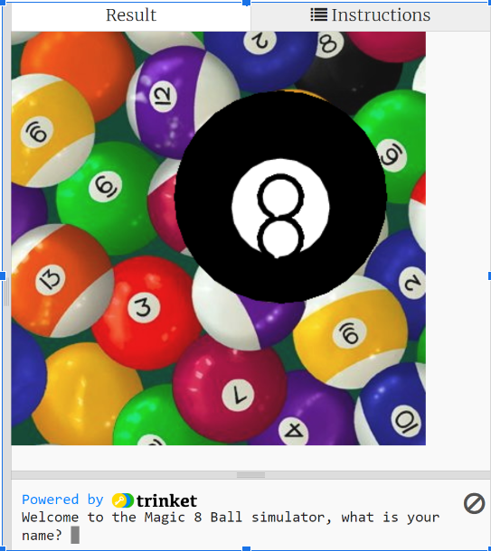
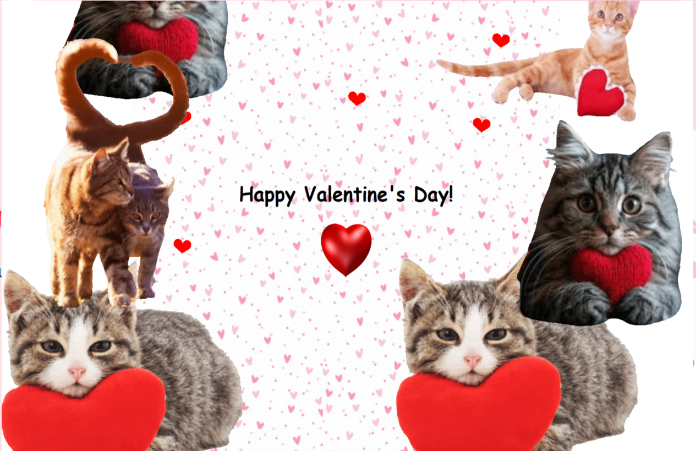
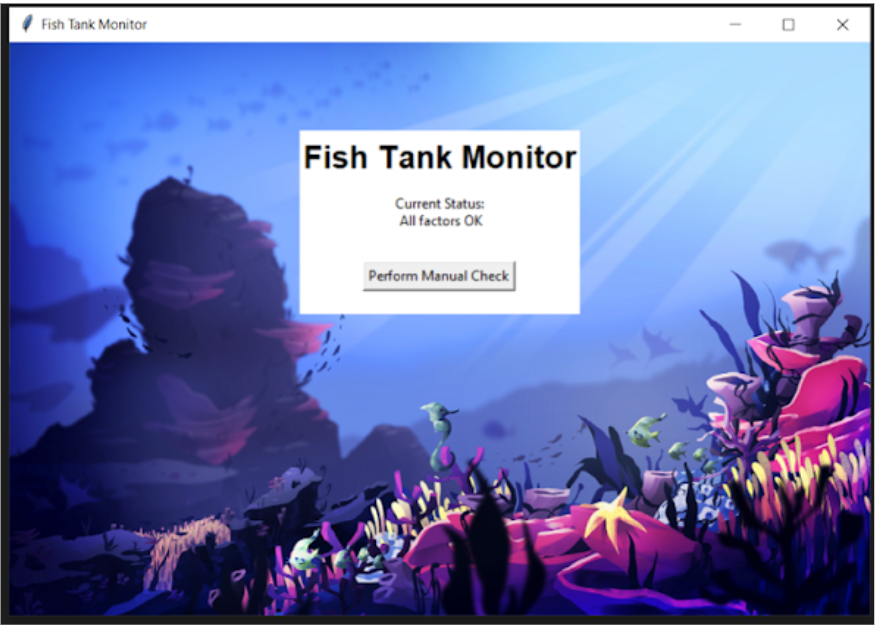

Home
Portfolio
About Me
This is my Portfolio Page!
1.1 Magic 8 Ball Simulator

Our first project that Katelyn and I created is a Magic 8 Ball where a user can input any yes/no questions of their choice and the 8 ball will give a variety of different responses. We were able to create a virtual image of a 8 ball and during the thinking process when
a user asks a question, the virtual 8 ball will vibrate different colors to signify its thinking. The user can ask as many questions as they would like until they want to stop.
1.2 2048 Game

While being tasked with 1.2 section notes from PLTW, Amir and I explored the different types of code functions that make up the game 2048. Learning and comprehending these functions, we were able to implement data storage, color, and user movement using the arrow keys on a keyboard
1.3 E-Card

In our third project in CSP, our team created a Valentine's card that involves lots of cats and hearts. We made it where the user/receiver can click on the screen to pop up an infinite amount of hearts and cats.
2.1 Fish Tank Monitor

In the first project of the second quarter, our group helped out a fish tank by preventing security breaches and making sure that all levels of chemicals were optimal for the fish.
Scratch Program Game
On our fifth project, we used scratch to create our very own games using concepts and tools we had previously learned from PLTW. Our group recreated the game "Just shapes and Beats" but also adding our own style.
2.2.7 GUI Project